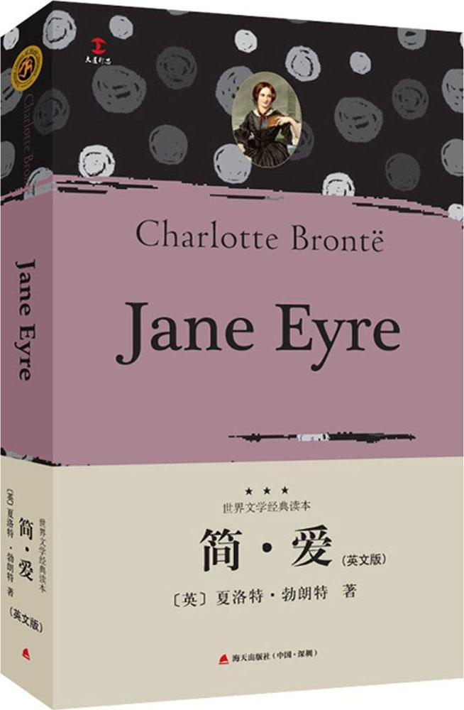

背景与作者
《简·爱》（Jane Eyre）是英国文学史上的一座里程碑，出版于1847年维多利亚时代初期。彼时的英国社会阶级森严，女性地位低下，工业革命带来的社会矛盾与宗教道德束缚交织。作者夏洛特·勃朗特（Charlotte Brontë）以笔名“柯勒·贝尔”（Currer Bell）发表此书，隐藏女性身份以规避当时对女作家的偏见。她出身于贫寒的牧师家庭，与两位妹妹艾米莉（《呼啸山庄》作者）和安妮（《艾格妮斯·格雷》作者）共同构成了文学史上著名的“勃朗特三姐妹”。夏洛特的个人经历——如幼年丧母、在严苛寄宿学校的成长、担任家庭教师的卑微身份——深深烙印在《简·爱》的叙事中，赋予作品强烈的自传色彩与情感共鸣。
主要内容
小说以第一人称讲述了孤女简·爱坎坷的成长历程。自幼父母双亡的她饱受舅母虐待，后被送往罗伍德慈善学校，在饥寒与压迫中锤炼出坚韧的灵魂。成年后，她成为桑菲尔德庄园的家庭教师，与主人罗切斯特展开了一段跨越阶级的禁忌之恋。然而，当婚礼上罗切斯特已婚的秘密被揭穿（其疯妻伯莎·梅森被囚禁于庄园阁楼），简毅然选择离开，坚守尊严与道德底线。漂泊中，她拒绝表兄圣约翰以宗教之名施加的精神控制，最终继承遗产获得经济独立，并回到因火灾致残的罗切斯特身边，以平等姿态与其缔结婚姻。
主题与突破
《简·爱》颠覆了维多利亚时代“天使家庭主妇”的刻板女性形象。简·爱矮小平凡，却以智慧、勇气与道德自主性成为文学史上首个真正意义上的现代女性主角。她呐喊“我贫穷、卑微、不美，但当我们的灵魂穿过坟墓站在上帝面前时，我们是平等的”，直指阶级与性别双重压迫的核心。小说亦探讨了宗教的双面性（伪善的布罗克赫斯特 vs. 简自我救赎的信仰）、疯癫的隐喻（伯莎·梅森作为被压抑的女性欲望象征），以及经济独立对女性自由的意义。
文学影响与时代回响
《简·爱》被誉为“女性主义文学的先声”，其心理现实主义叙事与哥特悬疑元素的结合开创了独特风格。它挑战了19世纪小说的传统结构——女主角不再依赖美貌或被动等待救赎，而是以行动定义自我价值。后世作家如乔治·艾略特、弗吉尼亚·伍尔夫均受其启发，而“阁楼上的疯女人”更成为女性主义批评的重要符号（吉尔伯特与古芭在《阁楼上的疯女人》中以此解构男权文本）。从话剧、电影到当代改编剧（如《藻海茫茫》对伯莎的重述），《简·爱》持续引发对性别、阶级与精神自由的再思考，证明其超越时代的永恒力量。